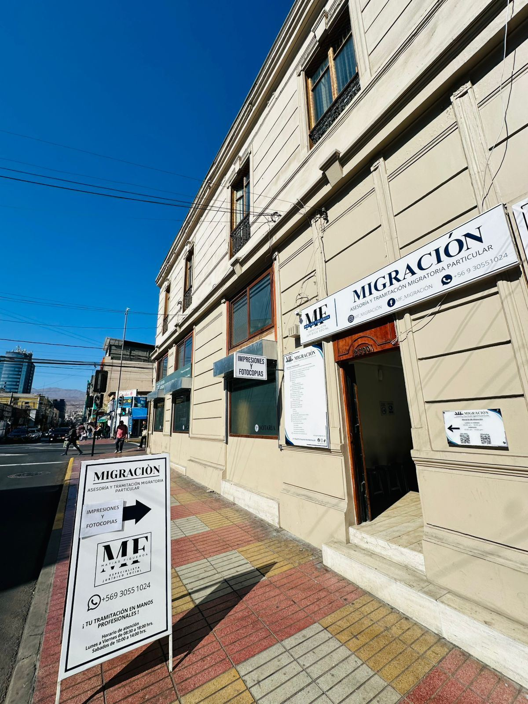
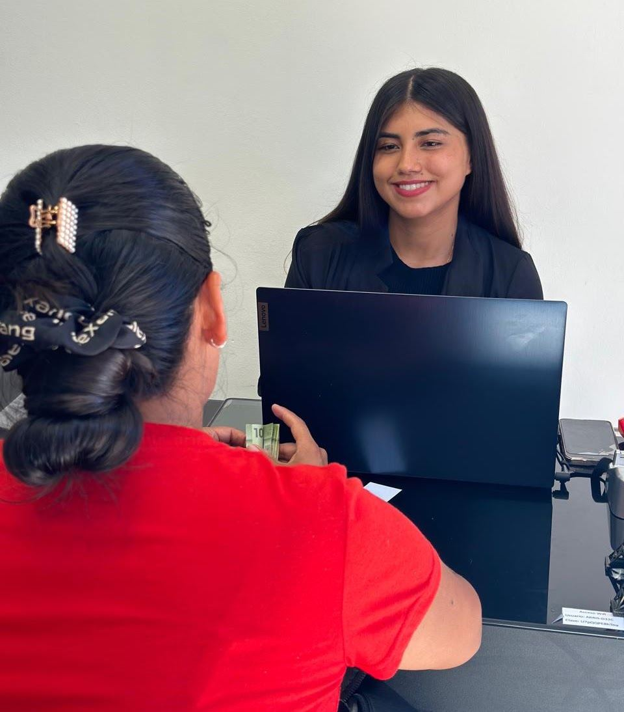
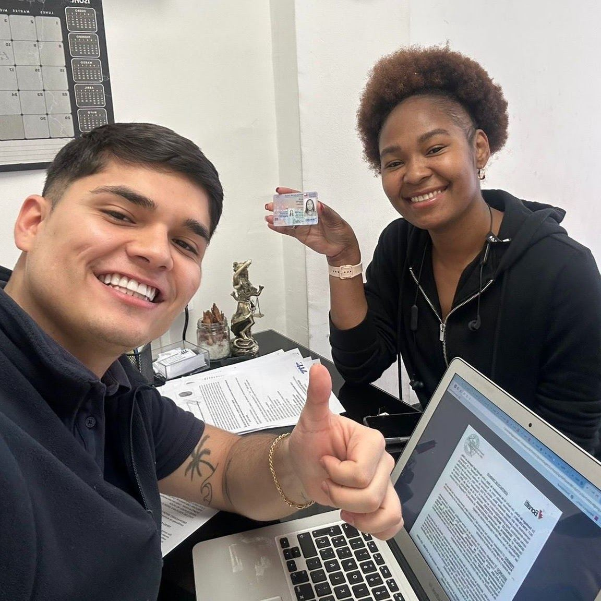
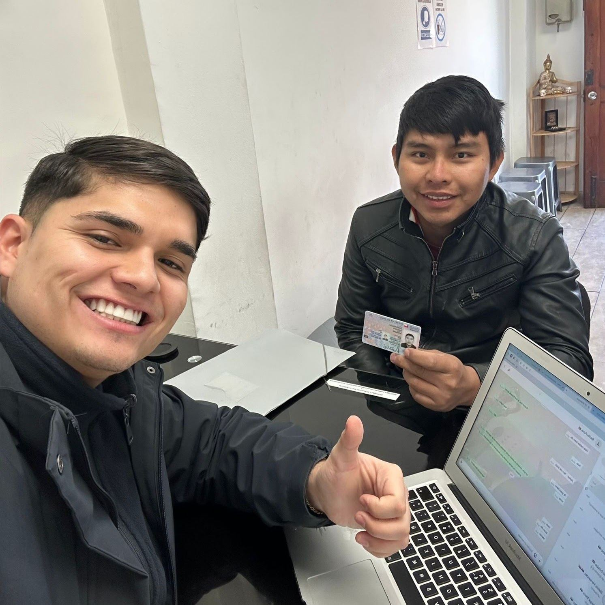
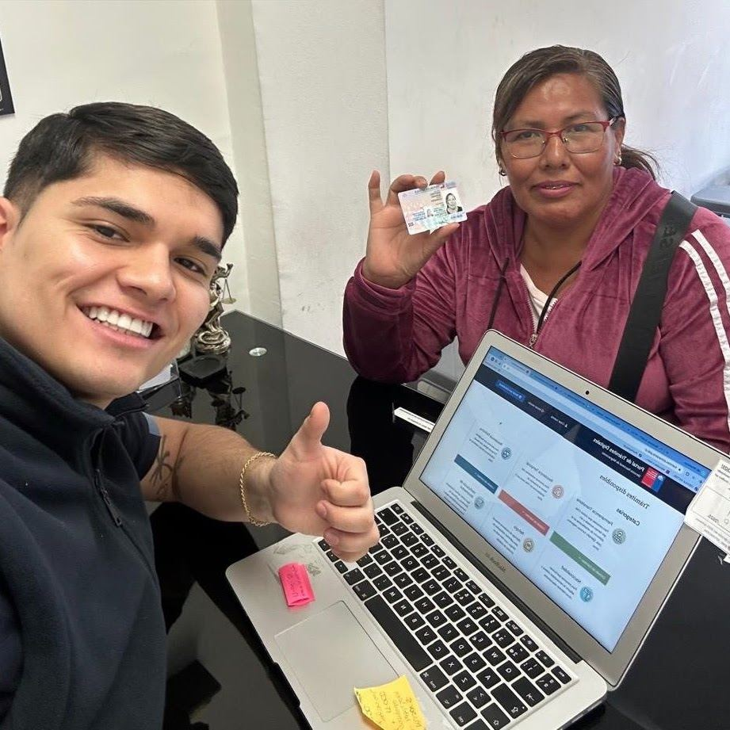
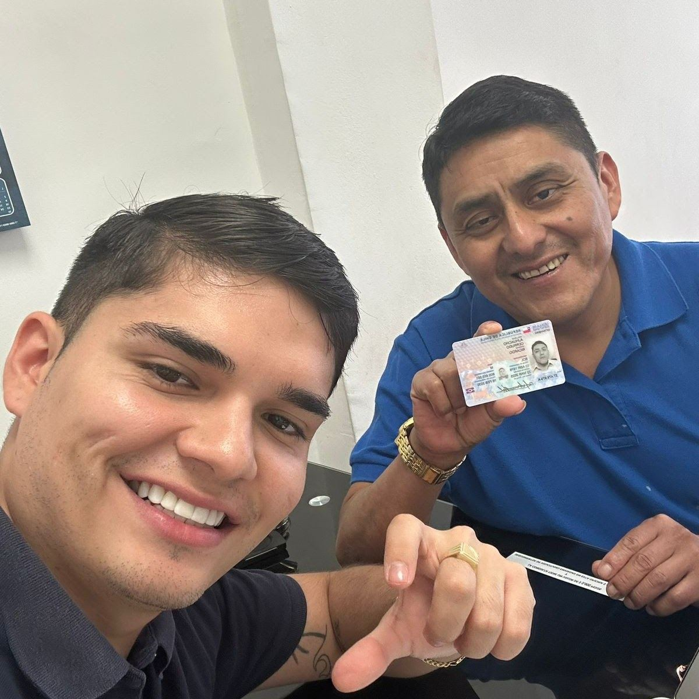
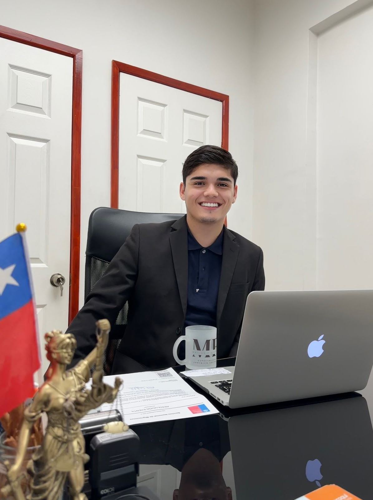
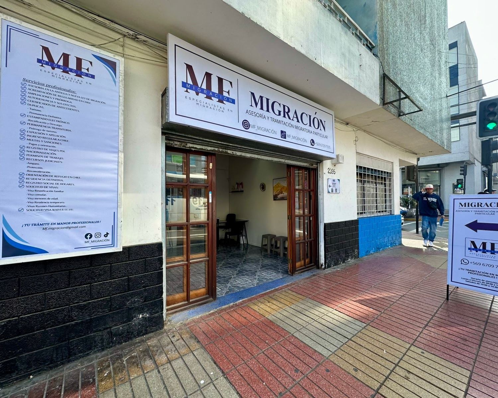

Asesoría y tramitación migratoria · Antofagasta
Su trámite migratorio, en manos de un especialista
Somos un equipo de profesionales titulados en Chile. Evaluamos su situación, le aconsejamos la mejor alternativa y hacemos el trámite con usted, evitando errores y retrasos en su solicitud.
5,0 en Google · 46 reseñas

Trámites
¿Qué necesita tramitar?
Si no sabe cuál es su caso, cuéntenos su situación y le decimos qué corresponde.
Residencia definitiva
Para quienes cumplen el tiempo y los requisitos de su residencia temporal.
Visa temporaria
Solicitud de residencia temporal según su motivo de estadía en Chile.
Nacionalización
Carta de nacionalización para obtener la nacionalidad chilena.
Visa menor de edad
Trámites de residencia para niños, niñas y adolescentes.
AmpliacionesPrórrogasCálculo y pago de multasAutodenunciaDerecho de peticiónApelaciones judicialesOrden de expulsión o abandono
Resultados
Visas aprobadas
Algunos de los clientes que recibieron su residencia con nuestra asesoría.





Cómo trabajamos
Un servicio ágil, con información en tiempo real
Presencial en Antofagasta
Lo atendemos en nuestras oficinas de Latorre y San Martín.
Virtual para otras regiones
Si vive fuera de Antofagasta, hacemos la asesoría a distancia.
Primero evaluamos su caso
Le explicamos la mejor alternativa antes de iniciar la solicitud.
Oficinas
Dos oficinas en el centro de Antofagasta

San Martín 2395
Antofagasta
Horario de atención
Lunes a viernes09:00 – 18:00
Sábado10:00 – 14:00
Domingo y festivosCerrado
Correomf.migracion@gmail.com
Deje su caso en manos de un profesional
Escríbanos por WhatsApp con su situación migratoria y le respondemos con los pasos a seguir.
Escribir por WhatsApp